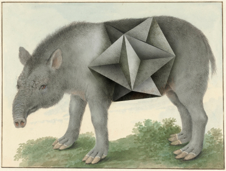

view on makersplace
view on makersplace
 View on OpenSea
View on OpenSea

animalis polyedae XIV by Volker Hermes
The Story
With some of the drawings I am not sure whether the animals are depicted correctly, whether the species is now extinct or whether I just don't know it. All questions that do not arise with polyhedra. If you know one shape, you can deduce the other by simple calculation. An interesting contrast that inspires this collage.
Process
My collages are based on historical drawings of animals, either from early scientific expeditions or natural history studies. Using image processing, I transform individual parts of the drawn animal bodies into geometric shapes. In a final step, I combine the original drawing and the polyhedron to create a hybrid new animal.
File Size & Format
-
File Size: ~77.7MB
-
Dementions: ~4,528 h X ~6,000 w
-
File Format: .TIF